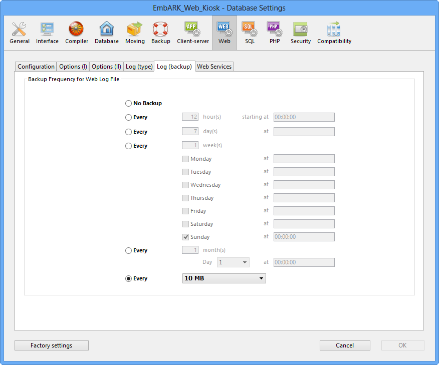

Logweb.txt
All hits on the kiosk server are recorded in a file called Logweb.txt. This is a 4D web server log, and can be analyzed by standard log analysis programs. To configure the logweb settings, click to Preferences, then select Web Server Prefs.
The Log (type) tab allows for the choice of 4 common log formats (CLF, DLF, ELF or WLF) or No Log File. Each type offers a selection of tracking tokens.

The Log (backup) tab enables scheduling of the backup, either at specific time intervals or when the logweb.txt file reaches a size limit.
Notes
- Logweb.txt file location (Windows): \EmbARK_Web_Kiosk\Database\Logs\Logweb.txt
- Logweb.txt file location (Macintosh): To access the Macintosh logweb.txt file, you must right-click (CTRL-click) the EmbARK Web Kiosk application package. This will reveal the Contents:Database:Logs folder path.
|
Connections Log
A visual connection log is also provided in the EmbARK Web Kiosk program. This log enables you to easily view the most recent activity on the kiosk. It displays IP addresses connecting to the kiosk, the time of connection, and the type of page that was accessed. Requests for static pages or images are not displayed here; only kiosk page requests will display.
If a user accesses an invalid URL (and so gets the NotFound.htm page), the connections log will display an entry that begins with "ERROR:" and a description of what caused the error.
This connections log opens automatically when you start the kiosk application. If you close the log for any reason, you can open it again by following these steps:
- From the File menu, choose Preferences.
- In the Preferences dialog box, click Open Log (or press command-L on your keyboard. Ctrl-L on Windows).
The Connections Log window appears behind the Preferences dialog box.
- Click Cancel to close the Preferences window.
|
|